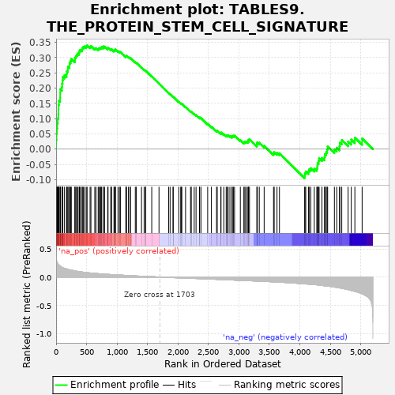
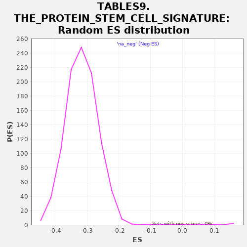

| | | Dataset | al5_v_al2 |
| Phenotype | NoPhenotypeAvailable |
| Upregulated in class | na_pos |
| GeneSet | TABLES9.THE_PROTEIN_STEM_CELL_SIGNATURE |
| Enrichment Score (ES) | 0.3400828 |
| Normalized Enrichment Score (NES) | 1.9774693 |
| Nominal p-value | 0.0 |
| FDR q-value | 0.0043887147 |
| FWER p-Value | 0.002 |
Table: GSEA Results Summary

Fig 1: Enrichment plot: TABLES9.THE_PROTEIN_STEM_CELL_SIGNATURE
Profile of the Running ES Score & Positions of GeneSet Members on the Rank Ordered List
| PROBE | GENE SYMBOL | GENE_TITLE | RANK IN GENE LIST | RANK METRIC SCORE | RUNNING ES | CORE ENRICHMENT | | 1 | Sorbs2 | | | 1 | 0.440 | 0.0304 | Yes |
| 2 | Tia1 | | | 7 | 0.295 | 0.0500 | Yes |
| 3 | Atrx | | | 13 | 0.273 | 0.0680 | Yes |
| 4 | Picalm | | | 19 | 0.263 | 0.0853 | Yes |
| 5 | Cdk6 | | | 28 | 0.242 | 0.1006 | Yes |
| 6 | Nav1 | | | 37 | 0.223 | 0.1145 | Yes |
| 7 | Brd8 | | | 39 | 0.220 | 0.1296 | Yes |
| 8 | Msi1 | | | 41 | 0.218 | 0.1446 | Yes |
| 9 | Mycbp2 | | | 47 | 0.217 | 0.1587 | Yes |
| 10 | Bcl11a | | | 67 | 0.200 | 0.1688 | Yes |
| 11 | Tns3 | | | 68 | 0.199 | 0.1827 | Yes |
| 12 | Sipa1l1 | | | 69 | 0.199 | 0.1965 | Yes |
| 13 | Fto | | | 96 | 0.173 | 0.2034 | Yes |
| 14 | Fermt1 | | | 99 | 0.173 | 0.2150 | Yes |
| 15 | Stk39 | | | 106 | 0.170 | 0.2257 | Yes |
| 16 | Vdr | | | 111 | 0.166 | 0.2364 | Yes |
| 17 | Trim24 | | | 138 | 0.156 | 0.2421 | Yes |
| 18 | Trim28 | | | 172 | 0.145 | 0.2457 | Yes |
| 19 | Tcf12 | | | 175 | 0.144 | 0.2553 | Yes |
| 20 | Vgll4 | | | 193 | 0.137 | 0.2615 | Yes |
| 21 | Tifa | | | 195 | 0.137 | 0.2708 | Yes |
| 22 | Pbld1 | | | 221 | 0.130 | 0.2749 | Yes |
| 23 | Arid5b | | | 223 | 0.129 | 0.2837 | Yes |
| 24 | Dach1 | | | 238 | 0.127 | 0.2897 | Yes |
| 25 | Limk2 | | | 250 | 0.123 | 0.2961 | Yes |
| 26 | Elmo1 | | | 309 | 0.110 | 0.2923 | Yes |
| 27 | Noxa1 | | | 310 | 0.110 | 0.3000 | Yes |
| 28 | Hmbox1 | | | 325 | 0.107 | 0.3046 | Yes |
| 29 | Mecp2 | | | 338 | 0.104 | 0.3095 | Yes |
| 30 | Cd44 | | | 355 | 0.101 | 0.3134 | Yes |
| 31 | Foxp4 | | | 378 | 0.096 | 0.3157 | Yes |
| 32 | Hmgcs2 | | | 382 | 0.095 | 0.3217 | Yes |
| 33 | Acss2 | | | 396 | 0.094 | 0.3256 | Yes |
| 34 | Scml4 | | | 425 | 0.090 | 0.3264 | Yes |
| 35 | Slc25a4 | | | 431 | 0.090 | 0.3317 | Yes |
| 36 | Uhrf2 | | | 446 | 0.087 | 0.3350 | Yes |
| 37 | Gtf2i | | | 468 | 0.084 | 0.3367 | Yes |
| 38 | Mkl2 | | | 495 | 0.081 | 0.3371 | Yes |
| 39 | Bcl11b | | | 509 | 0.079 | 0.3401 | Yes |
| 40 | Slco3a1 | | | 558 | 0.073 | 0.3356 | No |
| 41 | Insr | | | 572 | 0.072 | 0.3381 | No |
| 42 | Mga | | | 635 | 0.066 | 0.3304 | No |
| 43 | Tcf3 | | | 655 | 0.065 | 0.3311 | No |
| 44 | Nrf1 | | | 691 | 0.061 | 0.3285 | No |
| 45 | Myo1b | | | 702 | 0.059 | 0.3306 | No |
| 46 | Zmym4 | | | 721 | 0.058 | 0.3311 | No |
| 47 | Zmym2 | | | 735 | 0.057 | 0.3325 | No |
| 48 | Hk2 | | | 747 | 0.056 | 0.3343 | No |
| 49 | Hmga2 | | | 772 | 0.054 | 0.3333 | No |
| 50 | Arl6ip6 | | | 774 | 0.054 | 0.3368 | No |
| 51 | Phgdh | | | 797 | 0.052 | 0.3361 | No |
| 52 | Tle3 | | | 847 | 0.049 | 0.3298 | No |
| 53 | Slc25a25 | | | 853 | 0.049 | 0.3322 | No |
| 54 | Pdxk | | | 896 | 0.045 | 0.3270 | No |
| 55 | Wee1 | | | 912 | 0.044 | 0.3271 | No |
| 56 | Pck2 | | | 950 | 0.041 | 0.3226 | No |
| 57 | Rrp1b | | | 956 | 0.041 | 0.3245 | No |
| 58 | Phip | | | 972 | 0.040 | 0.3243 | No |
| 59 | Soat1 | | | 974 | 0.040 | 0.3268 | No |
| 60 | Nme4 | | | 1016 | 0.037 | 0.3213 | No |
| 61 | Glrx | | | 1040 | 0.036 | 0.3193 | No |
| 62 | Bcl7a | | | 1058 | 0.035 | 0.3183 | No |
| 63 | Etv6 | | | 1145 | 0.030 | 0.3034 | No |
| 64 | Lzts2 | | | 1149 | 0.029 | 0.3048 | No |
| 65 | Sdsl | | | 1156 | 0.029 | 0.3057 | No |
| 66 | Xrcc6 | | | 1187 | 0.028 | 0.3016 | No |
| 67 | Ilf3 | | | 1213 | 0.026 | 0.2985 | No |
| 68 | Mtus1 | | | 1220 | 0.025 | 0.2991 | No |
| 69 | Lmnb2 | | | 1300 | 0.020 | 0.2848 | No |
| 70 | Yap1 | | | 1317 | 0.019 | 0.2830 | No |
| 71 | Fhl2 | | | 1402 | 0.016 | 0.2675 | No |
| 72 | Fiz1 | | | 1445 | 0.014 | 0.2601 | No |
| 73 | Tcof1 | | | 1468 | 0.012 | 0.2566 | No |
| 74 | Ddx17 | | | 1472 | 0.012 | 0.2569 | No |
| 75 | Dnajc9 | | | 1570 | 0.008 | 0.2382 | No |
| 76 | Pmf1 | | | 1689 | 0.001 | 0.2149 | No |
| 77 | Cbx3 | | | 1847 | -0.007 | 0.1843 | No |
| 78 | Hes1 | | | 1871 | -0.008 | 0.1803 | No |
| 79 | Polr1a | | | 1920 | -0.010 | 0.1715 | No |
| 80 | Nsmce2 | | | 1922 | -0.010 | 0.1720 | No |
| 81 | Clic4 | | | 2014 | -0.014 | 0.1549 | No |
| 82 | Nfia | | | 2046 | -0.015 | 0.1498 | No |
| 83 | Itga1 | | | 2053 | -0.015 | 0.1497 | No |
| 84 | Csnk1e | | | 2064 | -0.016 | 0.1488 | No |
| 85 | Cdca7 | | | 2125 | -0.018 | 0.1382 | No |
| 86 | Smad5 | | | 2207 | -0.022 | 0.1237 | No |
| 87 | Bphl | | | 2219 | -0.022 | 0.1230 | No |
| 88 | Psip1 | | | 2267 | -0.025 | 0.1154 | No |
| 89 | Nup210 | | | 2297 | -0.026 | 0.1115 | No |
| 90 | Acot1 | | | 2354 | -0.028 | 0.1024 | No |
| 91 | Dapk2 | | | 2355 | -0.028 | 0.1043 | No |
| 92 | Acss1 | | | 2378 | -0.029 | 0.1020 | No |
| 93 | Epc1 | | | 2488 | -0.034 | 0.0828 | No |
| 94 | Prom1 | | | 2549 | -0.037 | 0.0735 | No |
| 95 | Thyn1 | | | 2634 | -0.041 | 0.0596 | No |
| 96 | Nfic | | | 2645 | -0.041 | 0.0605 | No |
| 97 | Bckdha | | | 2704 | -0.044 | 0.0521 | No |
| 98 | Bclaf1 | | | 2707 | -0.044 | 0.0548 | No |
| 99 | Olfm4 | | | 2753 | -0.046 | 0.0491 | No |
| 100 | Dkc1 | | | 2792 | -0.048 | 0.0449 | No |
| 101 | Ascl2 | | | 2812 | -0.048 | 0.0445 | No |
| 102 | Fam60a | | | 2824 | -0.049 | 0.0457 | No |
| 103 | Spin1 | | | 2853 | -0.050 | 0.0437 | No |
| 104 | Gusb | | | 2887 | -0.052 | 0.0408 | No |
| 105 | Hmgb3 | | | 2892 | -0.052 | 0.0436 | No |
| 106 | Rad50 | | | 2910 | -0.053 | 0.0439 | No |
| 107 | Agr3 | | | 2929 | -0.054 | 0.0442 | No |
| 108 | Gins4 | | | 3024 | -0.059 | 0.0296 | No |
| 109 | Csad | | | 3082 | -0.061 | 0.0226 | No |
| 110 | Slc1a3 | | | 3098 | -0.062 | 0.0240 | No |
| 111 | Ephb2 | | | 3115 | -0.063 | 0.0252 | No |
| 112 | Kcnq1 | | | 3140 | -0.064 | 0.0249 | No |
| 113 | Msh2 | | | 3156 | -0.065 | 0.0265 | No |
| 114 | Wiz | | | 3158 | -0.065 | 0.0308 | No |
| 115 | Mbp | | | 3174 | -0.065 | 0.0324 | No |
| 116 | Grb7 | | | 3296 | -0.071 | 0.0133 | No |
| 117 | Chek2 | | | 3298 | -0.071 | 0.0181 | No |
| 118 | Nfib | | | 3302 | -0.071 | 0.0225 | No |
| 119 | Dctd | | | 3335 | -0.073 | 0.0212 | No |
| 120 | Mcm7 | | | 3415 | -0.078 | 0.0110 | No |
| 121 | Ctsd | | | 3569 | -0.086 | -0.0133 | No |
| 122 | Urod | | | 3580 | -0.086 | -0.0093 | No |
| 123 | Parp1 | | | 3626 | -0.089 | -0.0120 | No |
| 124 | Hddc2 | | | 3666 | -0.091 | -0.0134 | No |
| 125 | Sox9 | | | 4080 | -0.121 | -0.0867 | No |
| 126 | Paics | | | 4085 | -0.121 | -0.0791 | No |
| 127 | Mcm2 | | | 4098 | -0.122 | -0.0730 | No |
| 128 | Zfpm1 | | | 4142 | -0.126 | -0.0727 | No |
| 129 | Mcm4 | | | 4154 | -0.127 | -0.0661 | No |
| 130 | Rpa2 | | | 4181 | -0.128 | -0.0623 | No |
| 131 | Senp1 | | | 4238 | -0.133 | -0.0641 | No |
| 132 | Ppp1r1b | | | 4279 | -0.138 | -0.0624 | No |
| 133 | Apex1 | | | 4289 | -0.139 | -0.0545 | No |
| 134 | Smoc2 | | | 4293 | -0.140 | -0.0454 | No |
| 135 | Cnn3 | | | 4309 | -0.142 | -0.0384 | No |
| 136 | Slc12a2 | | | 4317 | -0.143 | -0.0298 | No |
| 137 | Rtn4 | | | 4364 | -0.149 | -0.0286 | No |
| 138 | Uhrf1 | | | 4406 | -0.155 | -0.0259 | No |
| 139 | Pkig | | | 4412 | -0.155 | -0.0161 | No |
| 140 | Hells | | | 4434 | -0.158 | -0.0093 | No |
| 141 | Hmgn1 | | | 4449 | -0.159 | -0.0010 | No |
| 142 | Ephb4 | | | 4457 | -0.160 | 0.0088 | No |
| 143 | Aqp4 | | | 4568 | -0.178 | -0.0006 | No |
| 144 | Dtl | | | 4606 | -0.184 | 0.0049 | No |
| 145 | Mcm6 | | | 4652 | -0.193 | 0.0094 | No |
| 146 | Stmn1 | | | 4658 | -0.194 | 0.0218 | No |
| 147 | Mif | | | 4689 | -0.200 | 0.0298 | No |
| 148 | Mcm3 | | | 4793 | -0.223 | 0.0249 | No |
| 149 | Cdk4 | | | 4845 | -0.238 | 0.0314 | No |
| 150 | Mcm5 | | | 4904 | -0.255 | 0.0377 | No |
| 151 | Cps1 | | | 5023 | -0.295 | 0.0349 | No |
Table: GSEA details [plain text format]

Fig 2: TABLES9.THE_PROTEIN_STEM_CELL_SIGNATURE: Random ES distribution
Gene set null distribution of ES for TABLES9.THE_PROTEIN_STEM_CELL_SIGNATURE